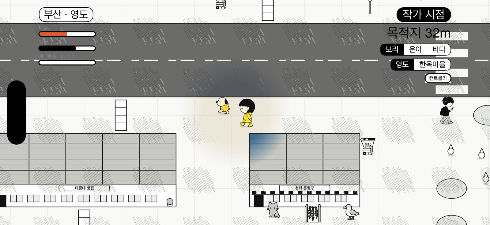

2000년대 초, 비 오는 하굣길 · Mac · iPhone · 2027
끌림
Drawn
종이 친다. 노란 우비를 입은 지우와 동네 강아지가 젖은 운동장을 가로질러 문방구까지 간다. 둘이 같이 뛸수록 흑백 동네에 색이 번진다.
브라우저 프로토타입. 스페이스가 점프, Shift가 부르기.
규칙은 세 줄
지우가 걷는다.
강아지가 따라온다.
같이 뛰면 색이 든다.
왼쪽 스틱은 지우입니다. A(스페이스)로 뛰고, B(Shift)로 강아지를 부릅니다. 강아지는 지우의 자취를 반 발 뒤에서 따라오고, 지우가 뛴 자리에서 똑같이 뜁니다. 냄새에 잠깐 팔리기도 하는데, 부르면 옵니다.
문방구까지 가는 길에 웅덩이가 있고, 상자가 있고, 백 원짜리 열두 개가 떨어져 있습니다. 하굣길마다 심부름이 하나 붙습니다. 문방구에 닿으면 비가 그칩니다.
마음이 쌓이면 색이 번진다
세상은 잉크 카툰, 비에 젖어 흑백입니다. 이건 스타일이 아니라 상태입니다. 둘이 나란히 웅덩이에 첨벙하고, 색 방울을 줍고, 횡단보도를 건너면 마음이 오르고, 둘 사이에서 색이 번져 나갑니다.
0 – 20완전한 흑백. 종이와 잉크, 그리고 노란 우비 둘.
20 – 45둘 사이 웅덩이에만 하늘색이 든다.
45 – 75둘 주변으로 색이 번진다. 오락실 간판, 붕어빵 포장마차, 파란 대문.
75 – 100동네 전체. 도착하면 비가 그치고 하늘에 색이 든다.
하굣길이 끝나면 마음이 몇 %인지와 오늘의 발견 세 줄이 남습니다 — 심부름은 했는지, 백 원짜리로 얼마를 모았는지(뽑기 몇 번인지), 몇 번 뛰고 첨벙거렸는지. 점수판은 없습니다.
길에서 노는 법
웅덩이운동장에도 골목에도 고인다. 걸어 지나면 느려지고, 뛰어들면 첨벙. 둘이 1.5초 안에 나란히 첨벙하면 색이 크게 튄다.
상자길을 막은 상자와 낮은 펜스. 뛰어넘는다. 강아지도 같은 자리에서 뛴다.
백 원짜리동네에 열두 개. 빗물에 씻겨 반짝인다. 하나면 뽑기 한 번, 다섯이면 오락 한 판.
횡단보도둘 중 하나가 서면 차가 3m 앞에 멈춘다. 다른 데서 건너면 놀란다.
심부름하굣길마다 하나. 두부값 모으기, 붕어빵 들르기, 운동장 한 바퀴, 종 치기 전에, 얌전히 가기 — 열 가지가 돌아간다.
냄새군고구마 통, 붕어빵 포장마차, 우체통, 평상. 강아지가 잠깐 팔린다. 기다려 주거나, 부르면 온다.
그 시절 동네에 있던 것
1990년대 후반에서 2000년대 초, 학교 앞 골목에 실제로 있던 것들을 그대로 세웠습니다.
교문 앞군고구마 드럼통, 붕어빵 포장마차, 솜사탕 수레, 병아리 상자, 뽑기 기계, 백 원짜리 오락기, 은색 공중전화 부스.
운동장철봉 세 단, 정글짐, 구름사다리, 뺑뺑이, 시소, 조회대, 국기게양대, 흰 골대. 비가 오면 다 젖어 있다.
골목빨간 우체통, 전단지 붙은 전봇대, 평상, 리어카, 연탄, 파란 대문, 우유 상자, 세워 둔 자전거.
간판오락실, 만화방, 비디오 대여점, 떡볶이집, 방앗간, 이발관, 사진관, 철물점, 세탁소. 그리고 길 끝의 문방구.
문방구 앞 오락기와 뽑기는 한 판 백 원이었습니다. 철권과 펌프는 동네 문방구 앞에도 있었습니다.
강아지마다 손맛이 다르다
다른 건 스탯이 아니라 손맛 — 얼마나 빠른지, 얼마나 냄새에 끌리는지. 마음은 강아지마다 남아서, 다음 하굣길에도 이어집니다.
보리 · 1살첫 친구. 뭐든 다 궁금하다. 웅덩이를 보면 먼저 뛰어든다.
은아 · 7살느긋하다. 모자를 눌러 쓰고 천천히 따라온다. 상자 앞에서 한 번 멈칫한다.
바다 · 3살힘이 좋다. 앞질러 뛰고, 색 방울을 먼저 줍는다.
어디서 놀까
동네는 타일 지도 한 장입니다. 학교 운동장·교문 앞 인도·큰길·횡단보도·상가 골목, 그리고 바다. 가게마다 간판이 있고, 장바구니 끌고 가는 할머니와 이어폰 낀 중학생이 오가고, 마을버스가 지나갑니다.
부산 · 영도바닷바람. 갈매기가 운동장 위를 돌고, 어묵 포장마차 앞에서 코가 멈춘다. 길 끝은 영도 문방구.
전주 · 한옥마을기와 담이 이어진다. 감나무, 골목 끝 오락실, 평상에 앉은 할머니. 길 끝은 한빛 문방구.
그림책 시점 하나
위에서 살짝 내려다본 그림책 한 장. 캐릭터는 가는 쪽을 봅니다 — 위로 걸으면 뒷모습, 아래로 걸으면 앞모습. 카메라는 돌지 않고, 가는 쪽으로 조금 앞서 볼 뿐입니다. Mac과 iPhone이 같은 장면을 씁니다. 창이 커도 보이는 동네 크기는 같습니다.

비 오는 날들
- 월문방구까지. 우비를 입고 나선다. 첫 웅덩이, 첫 상자, 첫 첨벙. 세상은 흑백이다.
- 화두부 심부름. 백 원짜리 여덟 개. 마을버스가 물을 튀긴다.
- 수운동장 한 바퀴. 가방 두고 놀이기구 세 개. 뺑뺑이가 혼자 돌고 있다.
- 목종 치기 전에. 학원 차 놓치면 안 된다. 큰길을 두 번 건넌다.
- 금뽑기 하는 날. 백 원짜리 열두 개를 다 줍는다. 도착하면 비가 그치고 무지개.
플랫폼
macOS · 키보드 · 컨트롤러iPhone · 가상 스틱SpriteKitiCloud 동기화VoiceOver · 햅틱
계정도, 서버도, 광고도 없습니다. 진행은 iCloud로 iPhone과 Mac에서 이어집니다.